Publications¶
2023¶
Large and tunable spin-orbit effect of 6p orbitals through structural cavities in crystals¶
Fava, Mauro, et al. “Large and tunable spin-orbit effect of 6p orbitals through structural cavities in crystals.” arXiv preprint arXiv:2307.09545 (2023).
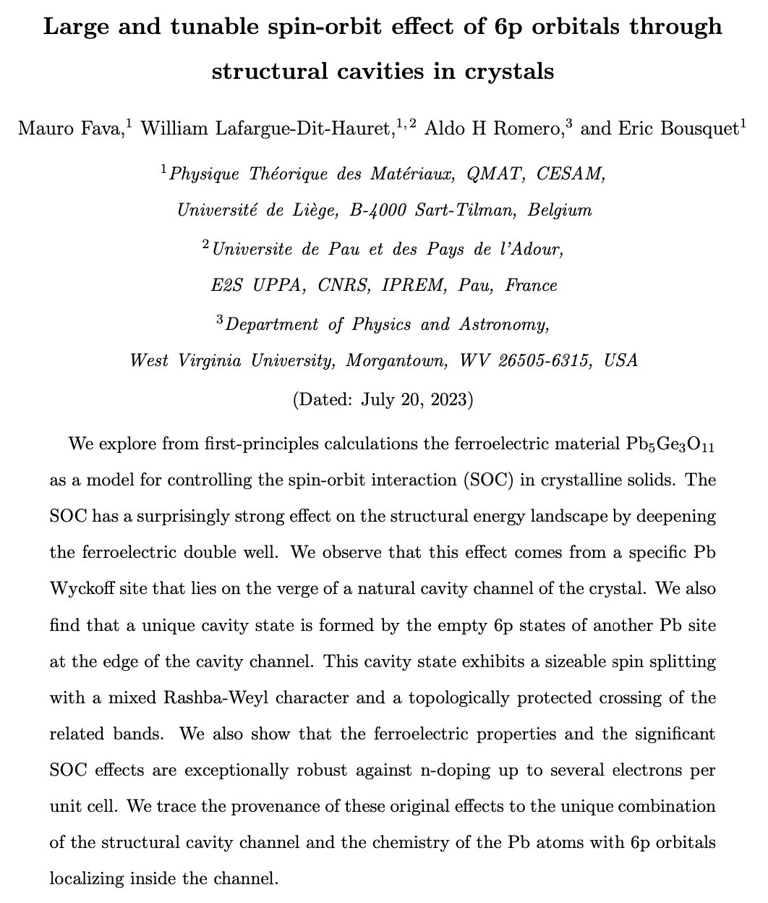@article{fava2023large,
title={Large and tunable spin-orbit effect of 6p orbitals through structural cavities in crystals},
author={Fava, Mauro and Lafargue-Dit-Hauret, William and Romero, Aldo H and Bousquet, Eric},
journal={arXiv preprint arXiv:2307.09545},
year={2023},
doi={10.48550/arXiv.2307.09545},
url={https://doi.org/10.48550/arXiv.2307.09545}
}
A proposed framework for the identification of indicator genes for monitoring antibiotic resistance in wastewater: Insights from metagenomic sequencing¶
Tarek, Mehedi Hasan, and Emily Garner. “A proposed framework for the identification of indicator genes for monitoring antibiotic resistance in wastewater: Insights from metagenomic sequencing.” Science of The Total Environment 854 (2023): 158698.
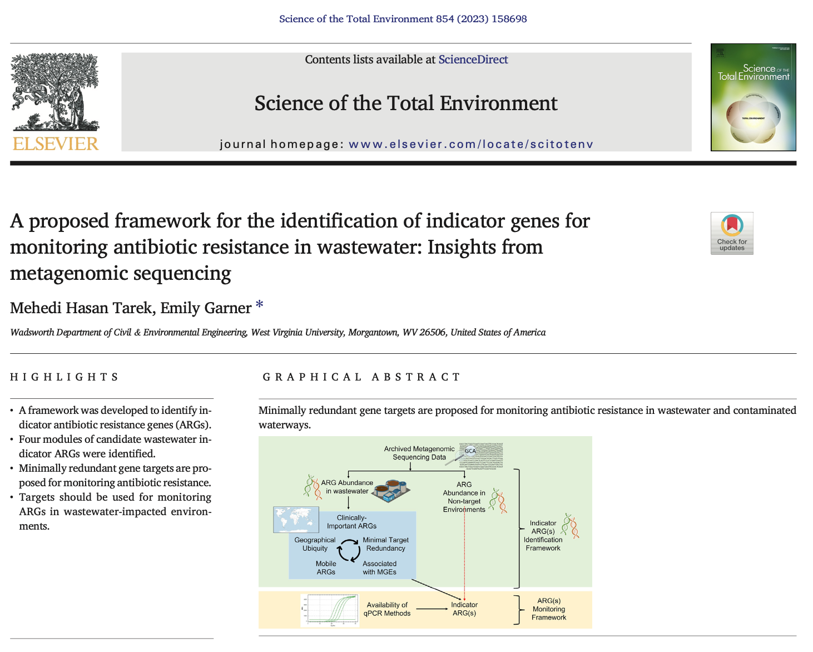@article{tarek2023proposed,
title={A proposed framework for the identification of indicator genes for monitoring antibiotic resistance in wastewater: Insights from metagenomic sequencing},
author={Tarek, Mehedi Hasan and Garner, Emily},
journal={Science of The Total Environment},
volume={854},
pages={158698},
year={2023},
publisher={Elsevier},
doi={10.1016/j.scitotenv.2022.158698},
url={https://doi.org/10.1016/j.scitotenv.2022.158698}
}
Analytical and Numerical Analysis of Circumbinary Disk Dynamics–I: Coplanar Systems¶
Mahesh, Siddharth, Sean T. McWilliams, and Michal Pirog. “Analytical and Numerical Analysis of Circumbinary Disk Dynamics–I: Coplanar Systems.” arXiv preprint arXiv:2305.01533 (2023).
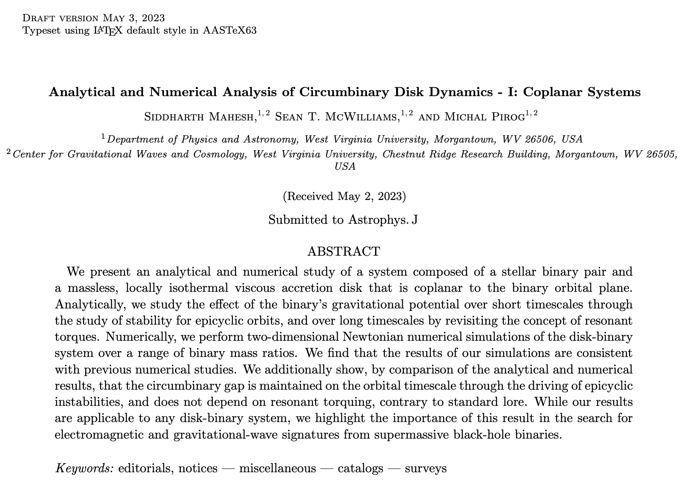@article{mahesh2023analytical,
title={Analytical and Numerical Analysis of Circumbinary Disk Dynamics--I: Coplanar Systems},
author={Mahesh, Siddharth and McWilliams, Sean T and Pirog, Michal},
journal={arXiv preprint arXiv:2305.01533},
year={2023},
doi={10.48550/arXiv.2305.01533},
url={https://doi.org/10.48550/arXiv.2305.01533}
}
An Empirical Analysis of Approximation Algorithms for the Unweighted Tree Augmentation Problem¶
Restanio, Jacob Thomas. “An Empirical Analysis of Approximation Algorithms for the Unweighted Tree Augmentation Problem.” (2023).
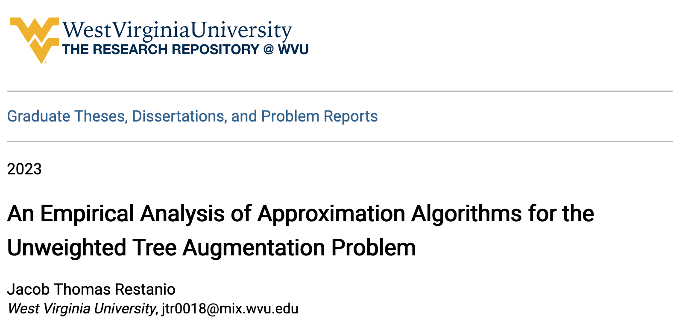@article{restanio2023empirical,
title={An Empirical Analysis of Approximation Algorithms for the Unweighted Tree Augmentation Problem},
author={Restanio, Jacob Thomas},
year={2023},
doi={10.33915/etd.12089},
url={https://doi.org/10.33915/etd.12089}
}
The NANOGrav 12.5 yr Data Set: Bayesian Limits on Gravitational Waves from Individual Supermassive Black Hole Binaries¶
Arzoumanian, Zaven, et al. “The NANOGrav 12.5 yr Data Set: Bayesian Limits on Gravitational Waves from Individual Supermassive Black Hole Binaries.” The Astrophysical Journal Letters 951.2 (2023): L28.
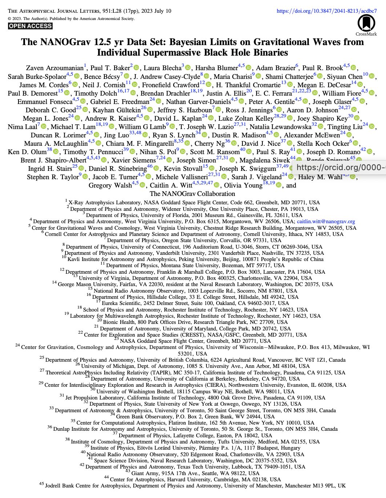@article{arzoumanian2023nanograv,
title={The NANOGrav 12.5 yr Data Set: Bayesian Limits on Gravitational Waves from Individual Supermassive Black Hole Binaries},
author={Arzoumanian, Zaven and Baker, Paul T and Blecha, Laura and Blumer, Harsha and Brazier, Adam and Brook,
Paul R and Burke-Spolaor, Sarah and B{\'e}csy, Bence and Casey-Clyde, J Andrew and Charisi, Maria and others},
journal={The Astrophysical Journal Letters},
volume={951},
number={2},
pages={L28},
year={2023},
publisher={IOP Publishing},
doi={10.3847/2041-8213/acdbc7},
url={https://doi.org/10.3847/2041-8213/acdbc7}
}
Imitation Learning for Swarm Control using Variational Inference¶
Jimoh, Hafeez Olafisayo. “Imitation Learning for Swarm Control using Variational Inference.” (2023).
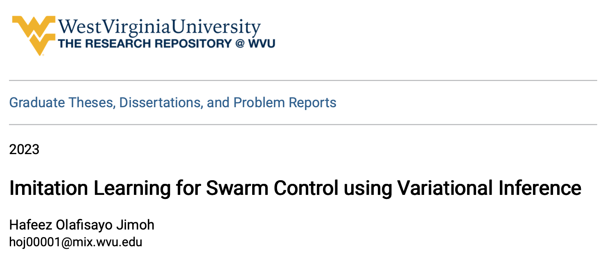@article{jimoh2023imitation,
title={Imitation Learning for Swarm Control using Variational Inference},
author={Jimoh, Hafeez Olafisayo},
year={2023},
doi={10.33915/etd.12115},
url={https://doi.org/10.33915/etd.12115}
}
Inverse design of a polarization demultiplexer for on-chip path-entangled photon-pair sources based on single quantum dots¶
Melo, Emerson G., et al. “Inverse design of a polarization demultiplexer for on-chip path-entangled photon-pair sources based on single quantum dots.” Optics Letters 48.17 (2023): 4516-4519.
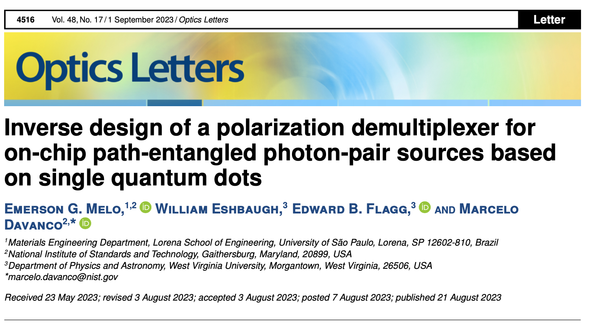@article{melo2023inverse,
title={Inverse design of a polarization demultiplexer for on-chip path-entangled photon-pair sources based on single quantum dots},
author={Melo, Emerson G and Eshbaugh, William and Flagg, Edward B and Davanco, Marcelo},
journal={Optics Letters},
volume={48},
number={17},
pages={4516--4519},
year={2023},
publisher={Optica Publishing Group},
doi={10.1364/OL.496129},
url={https://doi.org/10.1364/OL.496129}
}
Predicting dry matter intake in beef cattle¶
Blake, Nathan E., et al. “Predicting dry matter intake in beef cattle.” Journal of Animal Science (2023): skad269.
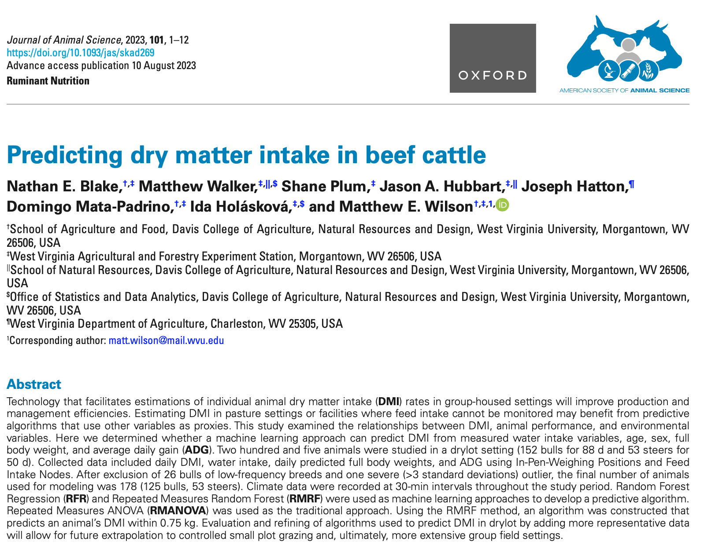@article{blake2023predicting,
title={Predicting dry matter intake in beef cattle},
author={Blake, Nathan E and Walker, Matthew and Plum, Shane and Hubbart, Jason A and Hatton, Joseph and Mata-Padrino, Domingo and Hol{\'a}skov{\'a}, Ida and Wilson, Matthew E},
journal={Journal of Animal Science},
pages={skad269},
year={2023},
publisher={Oxford University Press US},
doi={10.1093/jas/skad269},
url={https://doi.org/10.1093/jas/skad269}
}
Reduced-Order Probabilistic Emulation of Physics-Based Ring Current Models: Application to RAM-SCB Particle Flux¶
Cruz, Alfredo A., et al. “Reduced-Order Probabilistic Emulation of Physics-Based Ring Current Models: Application to RAM-SCB Particle Flux.” <https://doi.org/10.22541/essoar.169466161.13316560/v1>_
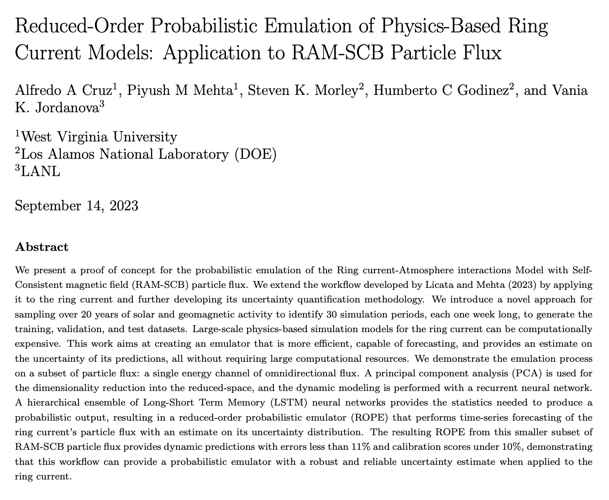@article{cruzreduced,
title={Reduced-Order Probabilistic Emulation of Physics-Based Ring Current Models: Application to RAM-SCB Particle Flux},
author={Cruz, Alfredo A and Mehta, Piyush M and Morley, Steven K and Godinez, Humberto C and Jordanova, Vania K},
doi={10.22541/essoar.169466161.13316560/v1},
url={https://doi.org/10.22541/essoar.169466161.13316560/v1}
}
Systematic determination of a material’s magnetic ground state from first principles¶
Mora, Andres Tellez, et al. “Systematic determination of a material’s magnetic ground state from first principles.” (2023).
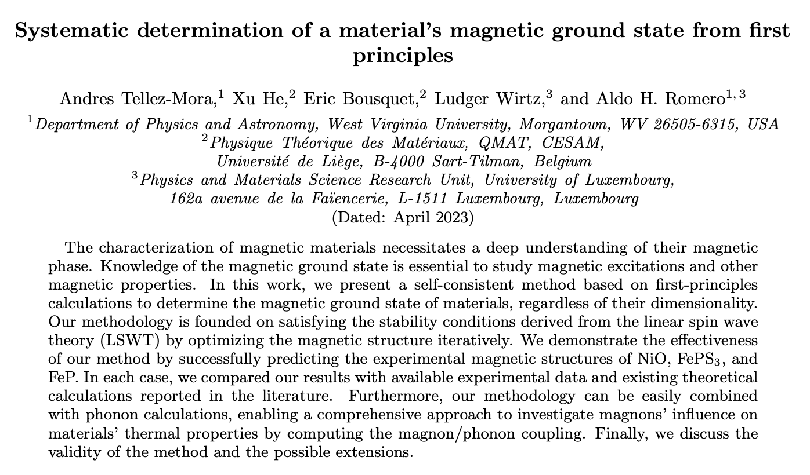@article{mora2023systematic,
title={Systematic determination of a material's magnetic ground state from first principles},
author={Mora, Andres Tellez and He, Xu and Bousquet, Eric and Wirtz, Ludger and Romero, Aldo},
year={2023},
doi={10.21203/rs.3.rs-3179548/v1},
url={https://doi.org/10.21203/rs.3.rs-3179548/v1}
}
The NANOGrav 15 yr Data Set: Observations and Timing of 68 Millisecond Pulsars¶
Agazie, Gabriella, et al. “The NANOGrav 15 yr Data Set: Observations and Timing of 68 Millisecond Pulsars.” The Astrophysical Journal Letters 951.1 (2023): L9.
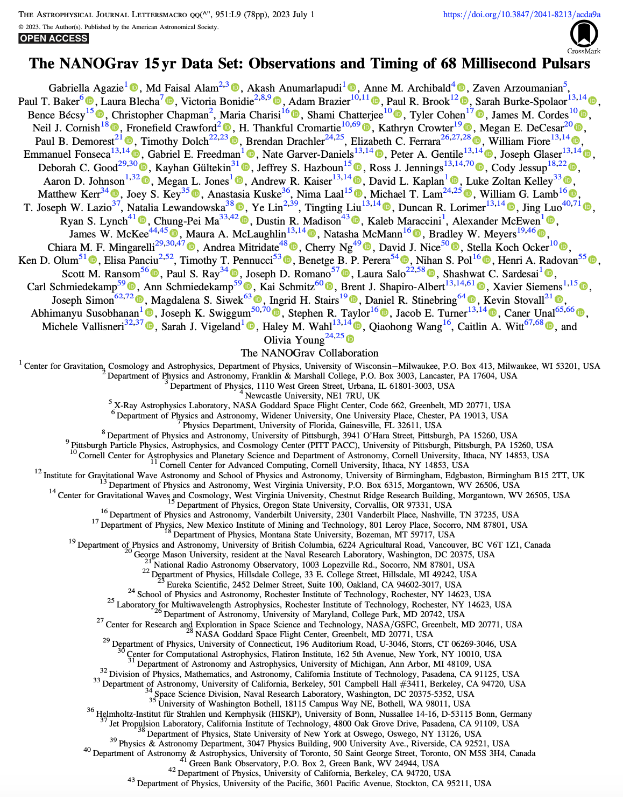@article{agazie2023nanograv,
title={The NANOGrav 15 yr Data Set: Observations and Timing of 68 Millisecond Pulsars},
author={Agazie, Gabriella and Alam, Md Faisal and Anumarlapudi, Akash and Archibald, Anne M and Arzoumanian,
Zaven and Baker, Paul T and Blecha, Laura and Bonidie, Victoria and Brazier, Adam and Brook, Paul R and others},
journal={The Astrophysical Journal Letters},
volume={951},
number={1},
pages={L9},
year={2023},
publisher={IOP Publishing},
doi={10.3847/2041-8213/acda9a},
url={https://doi.org/10.3847/2041-8213/acda9a}
}
The NANOGrav 15 yr Data Set: Constraints on Supermassive Black Hole Binaries from the Gravitational-wave Background¶
Agazie, Gabriella, et al. “The NANOGrav 15 yr Data Set: Constraints on Supermassive Black Hole Binaries from the Gravitational-wave Background.” The Astrophysical Journal Letters 952.2 (2023): L37.
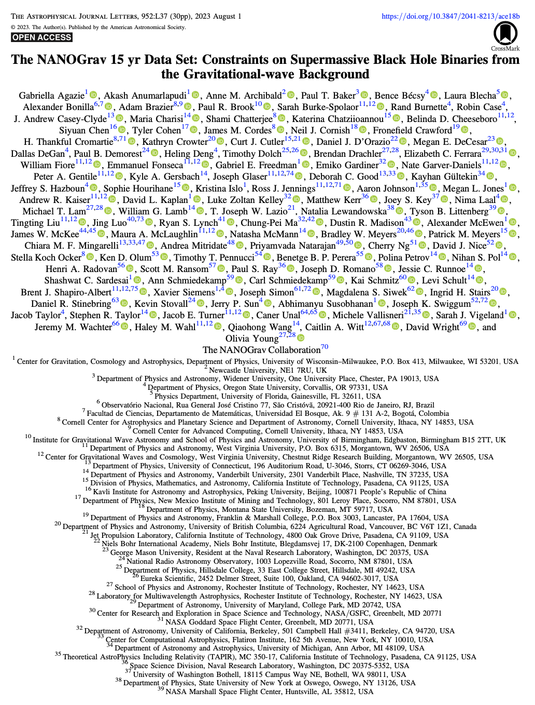@article{agazie2023nanograv,
title={The NANOGrav 15 yr Data Set: Constraints on Supermassive Black Hole Binaries from the Gravitational-wave Background},
author={Agazie, Gabriella and Anumarlapudi, Akash and Archibald, Anne M and Baker, Paul T and B{\'e}csy,
Bence and Blecha, Laura and Bonilla, Alexander and Brazier, Adam and Brook, Paul R and Burke-Spolaor, Sarah and others},
journal={The Astrophysical Journal Letters},
volume={952},
number={2},
pages={L37},
year={2023},
publisher={IOP Publishing},
doi={10.3847/2041-8213/ace18b},
url={https://doi.org/10.3847/2041-8213/ace18b}
}
Assessment of Enzyme Functionality at Metal–Organic Framework Interfaces Developed through Molecular Simulations¶
Chapman, Jordan, and Cerasela Zoica Dinu. “Assessment of Enzyme Functionality at Metal–Organic Framework Interfaces Developed through Molecular Simulations.” Langmuir 39.5 (2023): 1750-1763.
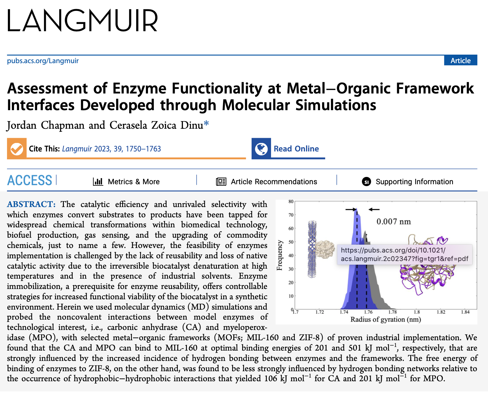@article{chapman2023assessment,
title={Assessment of Enzyme Functionality at Metal--Organic Framework Interfaces Developed through Molecular Simulations},
author={Chapman, Jordan and Zoica Dinu, Cerasela},
journal={Langmuir},
volume={39},
number={5},
pages={1750--1763},
year={2023},
publisher={ACS Publications},
doi={10.1021/acs.langmuir.2c02347},
url={https://doi.org/10.1021/acs.langmuir.2c02347}
}
Elucidation of Structure–Function Relationships of Hyaluronic Acid-Based Polymers via Combinatorial Approaches¶
Chapman, Jordan, et al. “Elucidation of Structure–Function Relationships of Hyaluronic Acid-Based Polymers via Combinatorial Approaches.” ACS Applied Polymer Materials 5.2 (2023): 1109-1124.
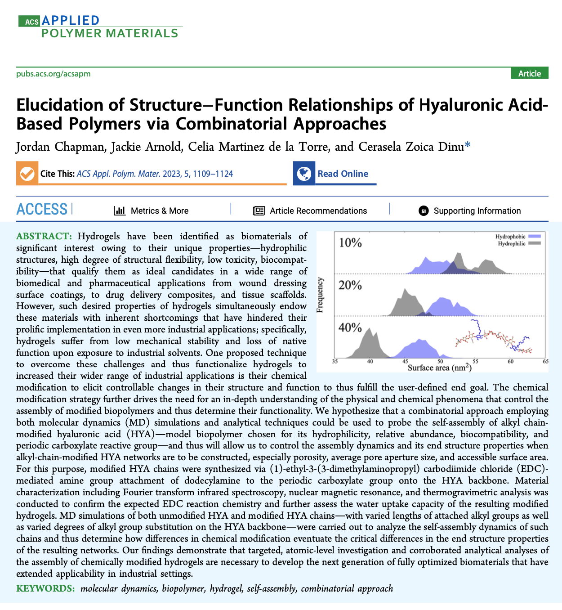@article{chapman2023elucidation,
title={Elucidation of Structure--Function Relationships of Hyaluronic Acid-Based Polymers via Combinatorial Approaches},
author={Chapman, Jordan and Arnold, Jackie and Martinez de la Torre, Celia and Dinu, Cerasela Zoica},
journal={ACS Applied Polymer Materials},
volume={5},
number={2},
pages={1109--1124},
year={2023},
publisher={ACS Publications},
doi={10.1021/acsapm.2c01518},
url={https://doi.org/10.1021/acsapm.2c01518}
}
The uncertain future of mountaintop-removal-mined landscapes 2: Modeling the influence of topography and vegetation¶
Bower, Samuel J., et al. “The uncertain future of mountaintop-removal-mined landscapes 2: Modeling the influence of topography and vegetation.” (2023).
@article{bower2023uncertain,
title={The uncertain future of mountaintop-removal-mined landscapes 2: Modeling the influence of topography and vegetation},
author={Bower, Samuel J and Shobe, Charles Merritt and Maxwell, Aaron E and Campforts, Benjamin},
year={2023},
publisher={EarthArXiv},
doi={10.31223/X5468R},
url={https://doi.org/10.31223/X5468R}
}
2022¶
Synthesis and Reactivity of Ampy-Based Ruthenium (II) Catalysts for Transfer Hydrogenation of Ketones¶
Amason, Edith K., et al. “Synthesis and Reactivity of Ampy-Based Ruthenium (II) Catalysts for Transfer Hydrogenation of Ketones.” Organometallics 41.6 (2022): 686-697.
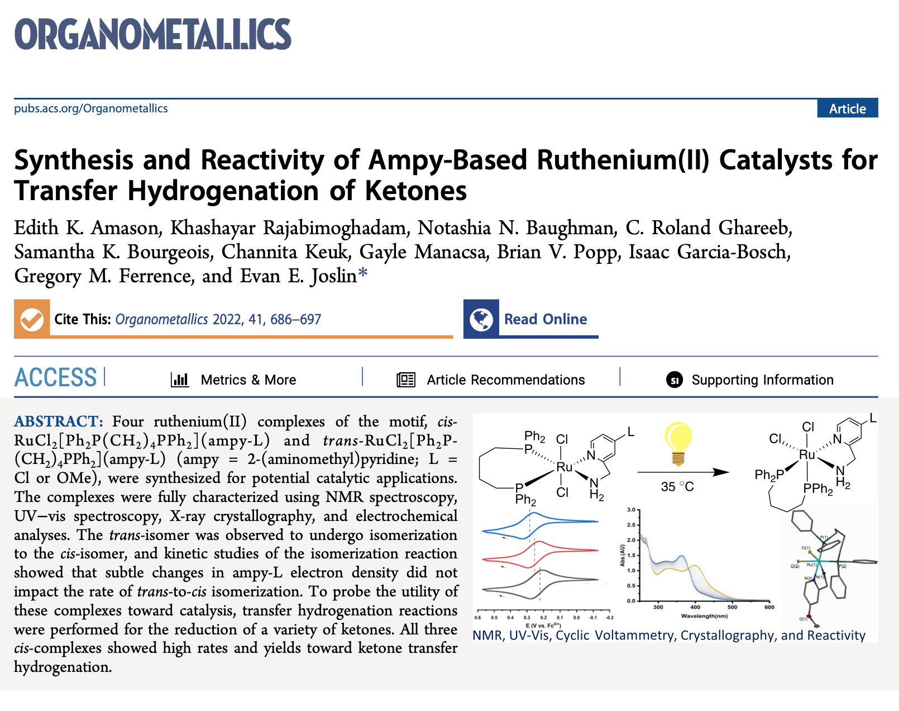@article{amason2022synthesis,
title={Synthesis and Reactivity of Ampy-Based Ruthenium (II) Catalysts for Transfer Hydrogenation of Ketones},
author={Amason, Edith K and Rajabimoghadam, Khashayar and Baughman, Notashia N and Ghareeb, C Roland and Bourgeois, Samantha K and Keuk, Channita and Manacsa, Gayle and Popp, Brian V and Garcia-Bosch, Isaac and Ferrence, Gregory M and others},
journal={Organometallics},
volume={41},
number={6},
pages={686--697},
year={2022},
publisher={ACS Publications},
doi={10.1021/acs.organomet.1c00444},
url={https://doi.org/10.1021/acs.organomet.1c00444}
}
Deep Radio Observations and the Role of the Cosmic Web in Galaxy Evolution¶
Luber, Nicholas M. “Deep Radio Observations and the Role of the Cosmic Web in Galaxy Evolution.” West Virginia University, 2022.
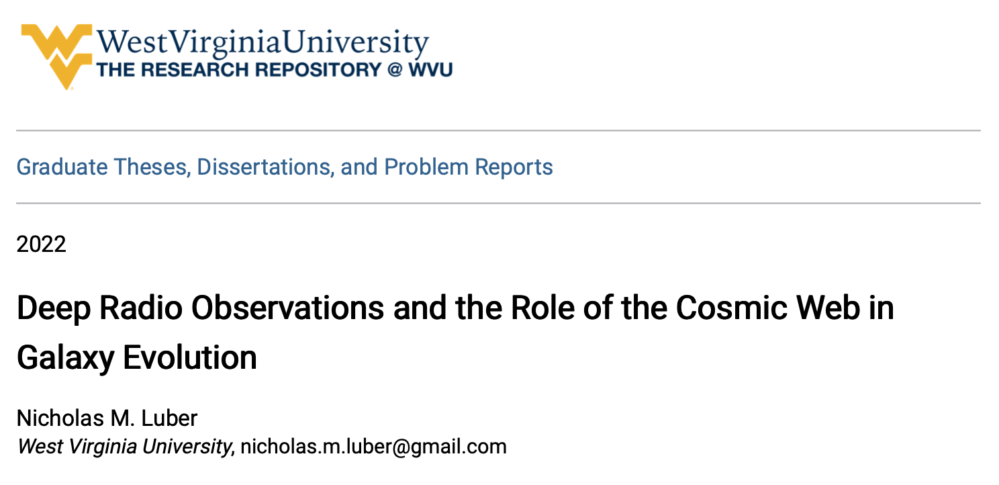@book{luber2022deep,
title={Deep Radio Observations and the Role of the Cosmic Web in Galaxy Evolution},
author={Luber, Nicholas M},
year={2022},
publisher={West Virginia University},
doi={10.33915/etd.11429},
url={https://doi.org/10.33915/etd.11429}
}
Physicochemical properties altered by the tail group of lipid membranes influence Huntingtin aggregation and lipid binding¶
Beasley, Maryssa, et al. “Physicochemical properties altered by the tail group of lipid membranes influence Huntingtin aggregation and lipid binding.” The Journal of Physical Chemistry B 126.16 (2022): 3067-3081.
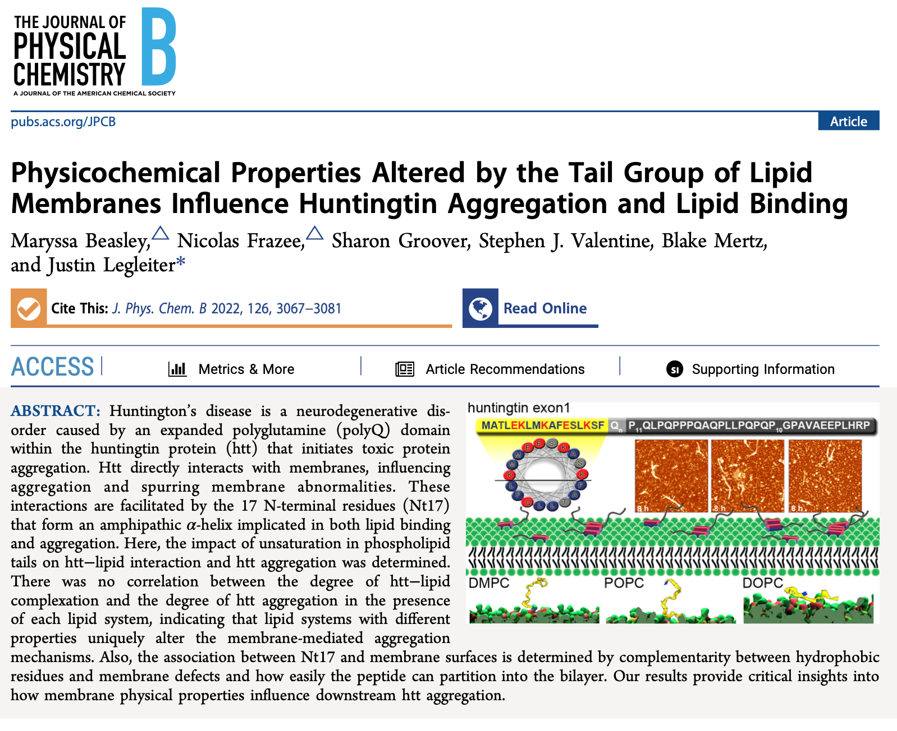@article{beasley2022physicochemical,
title={Physicochemical properties altered by the tail group of lipid membranes influence Huntingtin aggregation and lipid binding},
author={Beasley, Maryssa and Frazee, Nicolas and Groover, Sharon and Valentine, Stephen J and Mertz, Blake and Legleiter, Justin},
journal={The Journal of Physical Chemistry B},
volume={126},
number={16},
pages={3067--3081},
year={2022},
publisher={ACS Publications},
doi={10.1021/acs.jpcb.1c10254},
url={https://doi.org/10.1021/acs.jpcb.1c10254}
}
Spatial frequency of randomly acquired characteristics on outsoles¶
Richetelli, Nicole, and Jacqueline A. Speir. “Spatial frequency of randomly acquired characteristics on outsoles.” Journal of Forensic Sciences 67.5 (2022): 1810-1824.
@article{richetelli2022spatial,
title={Spatial frequency of randomly acquired characteristics on outsoles},
author={Richetelli, Nicole and Speir, Jacqueline A},
journal={Journal of Forensic Sciences},
volume={67},
number={5},
pages={1810--1824},
year={2022},
publisher={Wiley Online Library},
doi={10.1111/1556-4029.15112},
url={https://doi.org/10.1111/1556-4029.15112}
}
Implementing machine learning for the identification and classification of compound and mixtures in portable Raman instruments¶
Cooman, Travon, Trejos, Tatiana, Romero, Aldo H., & Arroyo, Luis E. (2022). “Implementing machine learning for the identification and classification of compound and mixtures in portable Raman instruments.” Chemical Physics Letters 787 (2022): 139283.

@article{cooman2022implementing,
title={Implementing machine learning for the identification and classification of compound and mixtures in portable Raman instruments},
author={Cooman, Travon and Trejos, Tatiana and Romero, Aldo H and Arroyo, Luis E},
journal={Chemical Physics Letters},
volume={787},
pages={139283},
year={2022},
publisher={Elsevier},
doi={10.1016/j.cplett.2021.139283},
url={https://dx.doi.org/10.1016/j.cplett.2021.139283}
}
Vickers hardness prediction from machine learning methods¶
Dovale-Farelo, Viviana, et al. “Vickers hardness prediction from machine learning methods.” Scientific Reports 12.1 (2022): 22475.
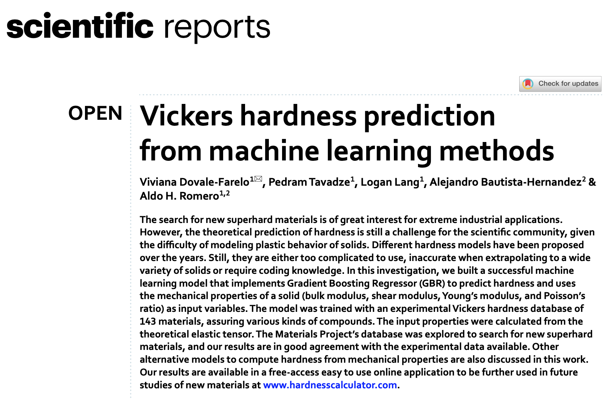@article{dovale2022vickers,
title={Vickers hardness prediction from machine learning methods},
author={Dovale-Farelo, Viviana and Tavadze, Pedram and Lang, Logan and Bautista-Hernandez, Alejandro and Romero, Aldo H},
journal={Scientific Reports},
volume={12},
number={1},
pages={22475},
year={2022},
publisher={Nature Publishing Group UK London},
doi={10.1038/s41598-022-26729-3},
url={https://doi.org/10.1038/s41598-022-26729-3}
}
Chiral magnetism, lattice dynamics, and anomalous Hall conductivity in antiferromagnetic antiperovskite¶
Duran-Pinilla, J. M., Aldo H. Romero, and A. C. Garcia-Castro. “Chiral magnetism, lattice dynamics, and anomalous Hall conductivity in V 3 AuN antiferromagnetic antiperovskite.” Physical Review Materials 6.12 (2022): 125003.

@article{duran2022chiral,
title={Chiral magnetism, lattice dynamics, and anomalous Hall conductivity in V 3 AuN antiferromagnetic antiperovskite},
author={Duran-Pinilla, JM and Romero, Aldo H and Garcia-Castro, AC},
journal={Physical Review Materials},
volume={6},
number={12},
pages={125003},
year={2022},
publisher={APS},
doi={10.1103/PhysRevMaterials.6.125003},
url={https://doi.org/10.1103/PhysRevMaterials.6.125003}
}
Stability and diffusion of oxygen vacancies in LaNiO3: a DMFT study¶
Herath, Uthpala, et al. “Stability and diffusion of oxygen vacancies in LaNiO $ _3 $: a DMFT study.” arXiv preprint arXiv:2212.07348 (2022).
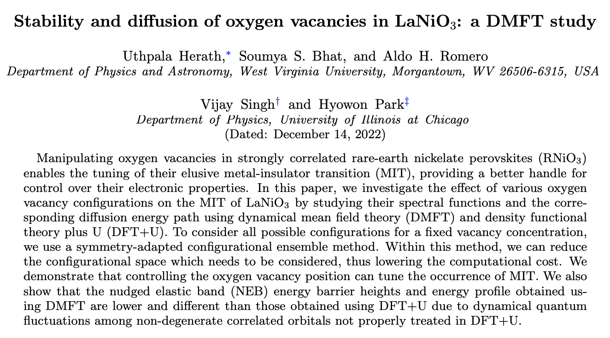@article{herath2022stability,
title={Stability and diffusion of oxygen vacancies in LaNiO $ \_3 $: a DMFT study},
author={Herath, Uthpala and Singh, Vijay and Bhat, Soumya S and Park, Hyowon and Romero, Aldo H},
journal={arXiv preprint arXiv:2212.07348},
year={2022},
doi={10.48550/arXiv.2212.07348},
url={https://doi.org/10.48550/arXiv.2212.07348}
}
Symmetry-based computational search for novel binary and ternary 2D materials¶
Wang, Hai-Chen, et al. “Symmetry-based computational search for novel binary and ternary 2D materials.” 2D Materials 10.3 (2023): 035007.
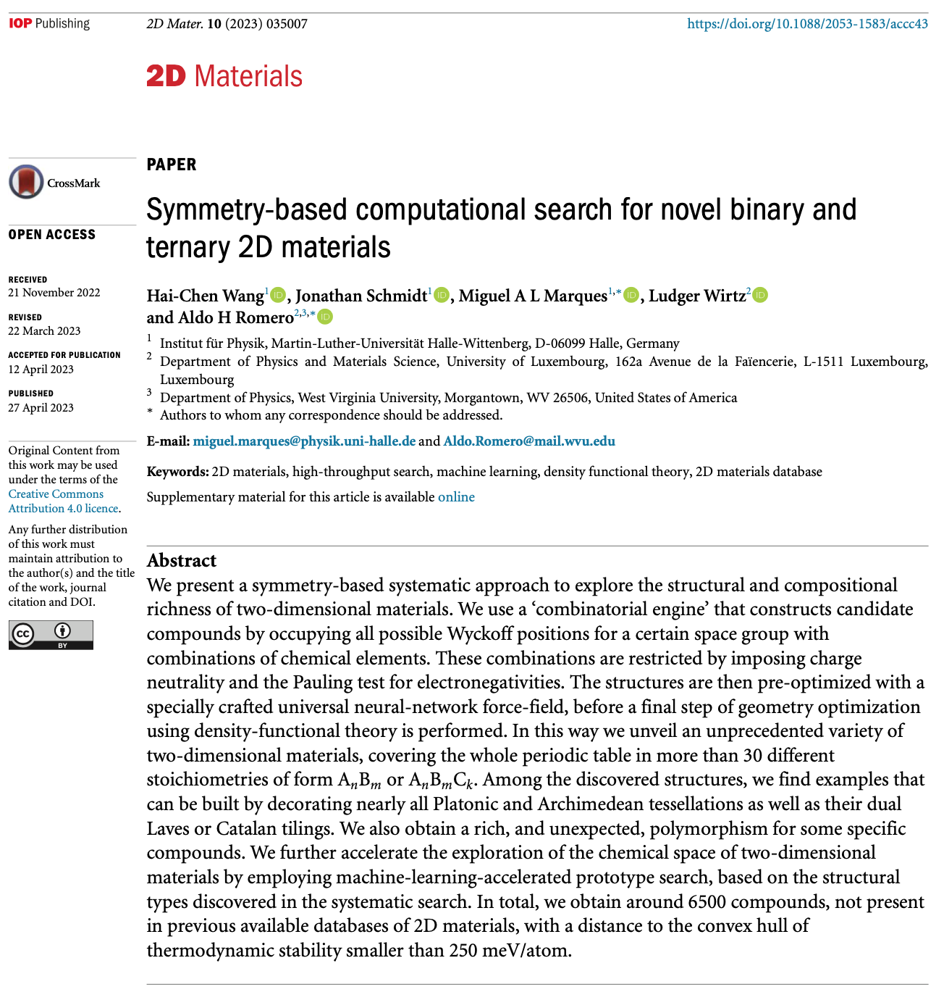@article{wang2023symmetry,
title={Symmetry-based computational search for novel binary and ternary 2D materials},
author={Wang, Hai-Chen and Schmidt, Jonathan and Marques, Miguel AL and Wirtz, Ludger and Romero, Aldo H},
journal={2D Materials},
volume={10},
number={3},
pages={035007},
year={2023},
publisher={IOP Publishing},
doi={10.1088/2053-1583/accc43},
url={https://doi.org/10.1088/2053-1583/accc43}
}
Stochastic modeling of physical drag coefficient-its impact on orbit prediction and space traffic management¶
Paul, Smriti Nandan, et al. “Stochastic modeling of physical drag coefficient-its impact on orbit prediction and space traffic management.” Advances in Space Research (2023).
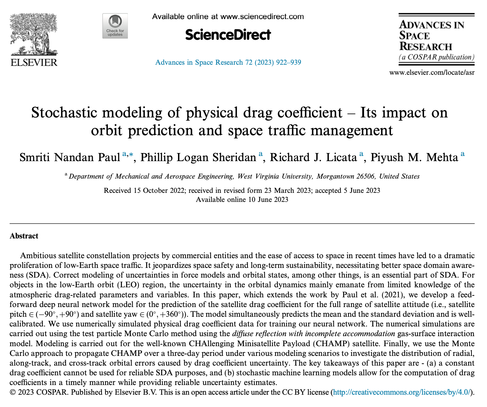@article{paul2023stochastic,
title={Stochastic modeling of physical drag coefficient-its impact on orbit prediction and space traffic management},
author={Paul, Smriti Nandan and Sheridan, Phillip Logan and Licata, Richard J and Mehta, Piyush M},
journal={Advances in Space Research},
year={2023},
publisher={Elsevier},
doi={10.1016/j.asr.2023.06.006},
url={https://doi.org/10.1016/j.asr.2023.06.006}
}
2021¶
Identification of a Fe-Dependent Optical Mode in CuAl1–x Fe x O2¶
Aziziha, Mina, et al. “Identification of a Fe-Dependent Optical Mode in CuAl1–x Fe x O2.” The Journal of Physical Chemistry C 125.6 (2021): 3577-3583.
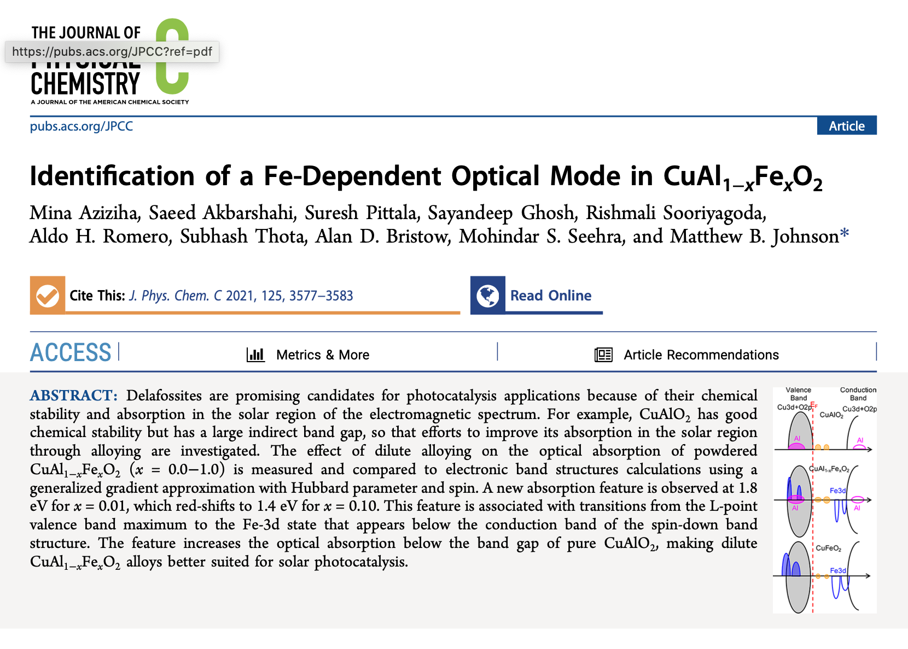@article{aziziha2021identification,
title={Identification of a Fe-Dependent Optical Mode in CuAl1--x Fe x O2},
author={Aziziha, Mina and Akbarshahi, Saeed and Pittala, Suresh and Ghosh, Sayandeep and Sooriyagoda, Rishmali and Romero, Aldo H and Thota, Subhash and Bristow, Alan D and Seehra, Mohindar S and Johnson, Matthew B},
journal={The Journal of Physical Chemistry C},
volume={125},
number={6},
pages={3577--3583},
year={2021},
publisher={ACS Publications},
doi={10.1021/acs.jpcc.0c10440},
url={https://doi.org/10.1021/acs.jpcc.0c10440}
}
Evaluating firearm examiner conclusion variability using cartridge case reproductions¶
Law, Eric F., and Keith B. Morris. “Evaluating firearm examiner conclusion variability using cartridge case reproductions.” Journal of forensic sciences 66.5 (2021): 1704-1720.
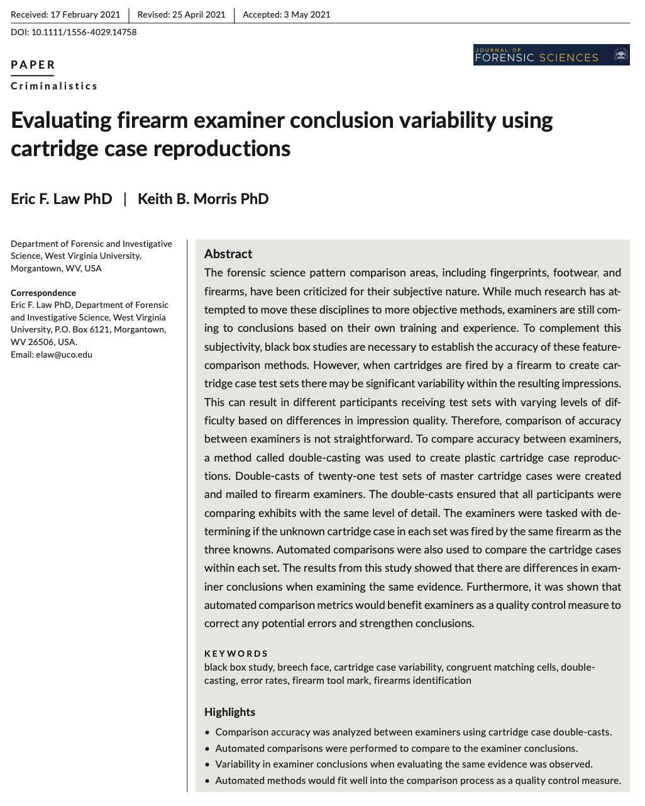@article{law2021evaluating,
title={Evaluating firearm examiner conclusion variability using cartridge case reproductions},
author={Law, Eric F and Morris, Keith B},
journal={Journal of forensic sciences},
volume={66},
number={5},
pages={1704--1720},
year={2021},
publisher={Wiley Online Library},
doi={10.1111/1556-4029.14758},
url={https://doi.org/10.1111/1556-4029.14758}
}
Impacts of fuel nonequidiffusivity on premixed flame propagation in channels with open ends¶
Abidakun, O., Adebiyi, A., Valiev, D., & Akkerman, V. (2021). “Impacts of fuel nonequidiffusivity on premixed flame propagation in channels with open ends.” Physics of Fluids, 33(1), 013604.
Comprehensive analysis of a dense sample of FRB 121102 bursts¶
Aggarwal, K., Agarwal, D., Lewis, E. F., Anna-Thomas, R., Tremblay, J. C., Burke-Spolaor, S., McLaughlin, M. A., & Lorimer, D. R. (2021). “Comprehensive analysis of a dense sample of FRB 121102 bursts.” The Astrophysical Journal, 922(2), 115.
A general model to explain repeated turnovers of sex determination in the Salicaceae¶
Yang, W., Wang, D., Li, Y., Zhang, Z., Tong, S., Li, M., Zhang, X., Zhang, L., Ren, L., Ma, X., Zhou, R., Sanderson, B. J., Keefover-Ring, K., Yin, T., Smart, L. B., Liu, J., DiFazio, S. P., Olson, M., & Ma, T. (2021). “A general model to explain repeated turnovers of sex determination in the Salicaceae.” Molecular biology and evolution, 38(3), 968-980.
MechElastic: A Python library for analysis of mechanical and elastic properties of bulk and 2D materials¶
Singh, S., Lang, L., Dovale-Farelo, V., Herath, U., Tavadze, P., Coudert, F., & Romero, A. H. (2021). “MechElastic: A Python library for analysis of mechanical and elastic properties of bulk and 2D materials.” Computer Physics Communications, 267108068.
Molecular dynamics simulations of a hydrophilic MIL-160-based membrane demonstrate pressure-dependent selective uptake of industrially relevant greenhouse gases¶
Chapman, J., Garapati, N., Glezakou, V., Duan, Y., Hu, J., & Dinu, C. Z. (2021). “Molecular dynamics simulations of a hydrophilic MIL-160-based membrane demonstrate pressure-dependent selective uptake of industrially relevant greenhouse gases.” Materials Advances, 2(18), 5922-5934.
Integration of high-density genetic mapping with transcriptome analysis uncovers numerous agronomic QTL and reveals candidate genes for the control of tillering in sorghum¶
Govindarajulu, R., Hostetler, A. N., Xiao, Y., Chaluvadi, S. R., Mauro-Herrera, M., Siddoway, M. L., Whipple, C., Bennetzen, J. L., Devos, K. M., Doust, A. N., & Hawkins, J. S. (2021). “Integration of high-density genetic mapping with transcriptome analysis uncovers numerous agronomic QTL and reveals candidate genes for the control of tillering in sorghum.” G3, 11(2), jkab024.
DMFTWDFT: An open-source code combining dynamical mean field theory with various density functional theory packages¶
Singh, V., Herath, U., Wah, B., Liao, X., Romero, A. H., & Park, H. (2021). “DMFTWDFT: An open-source code combining dynamical mean field theory with various density functional theory packages.” Computer Physics Communications, 261107778.
Impact of driver and model uncertainty on drag and orbit prediction¶
Licata, R. J., Mehta, P., & Tobiska, W. K. (2021). “Impact of driver and model uncertainty on drag and orbit prediction.” Proceedings of the 31st AAS/AIAA Space Flight Mechanics Meeting, .
Sensitivity of present and future detectors across the black-hole binary gravitational wave spectrum¶
Kaiser, A. R., & McWilliams, S. T. (2021). “Sensitivity of present and future detectors across the black-hole binary gravitational wave spectrum.” Classical and Quantum Gravity, 38(5), 055009.
Bacterial analogs to cholesterol affect dimerization of proteorhodopsin and modulates preferred dimer interface¶
Sefah, E., & Mertz, B. (2021). “Bacterial analogs to cholesterol affect dimerization of proteorhodopsin and modulates preferred dimer interface.” Journal of Chemical Theory and Computation, 17(4), 2502-2512.
(2021). Homo-oligomerization of the human adenosine A2A receptor is driven by the intrinsically disordered C-terminus¶
“(2021). Homo-oligomerization of the human adenosine A2A receptor is driven by the intrinsically disordered C-terminus.” Elife, 10e66662.
Estimating multiple precision matrices with cluster fusion regularization¶
Price, B. S., Molstad, A. J., & Sherwood, B. (2021). “Estimating multiple precision matrices with cluster fusion regularization.” Journal of Computational and Graphical Statistics, 30(4), 823-834.
Dynamics of explosions in cylindrical vented enclosures: validation of a computational model by experiments¶
Ogunfuye, S., Sezer, H., Kodakoglu, F., Farahani, H. F., Rangwala, A. S., & Akkerman, V. (2021). “Dynamics of explosions in cylindrical vented enclosures: validation of a computational model by experiments.” Fire, 4(1), 9.
Astrophysics milestones for pulsar timing array gravitational-wave detection¶
Pol, N. S., Taylor, S. R., Kelley, L. Z., Vigeland, S. J., Simon, J., Chen, S., Arzoumanian, Z., Baker, P. T., Bécsy, B., Brazier, A., Brook, P. R., Burke-Spolaor, S., Chatterjee, S., Cordes, J. M., Cornish, N. J., Crawford, F., Cromartie, H. T., DeCesar, M. E., Demorest, P. B., Dolch, T., Ferrara, E. C., Fiore, W., Fonseca, E., Garver-Daniels, N., Good, D. C., Hazboun, J. S., Jennings, R. J., Jones, M. L., Kaiser, A. R., Kaplan, D. L., Key, J. S., Lam, M. T., (2021). “Astrophysics milestones for pulsar timing array gravitational-wave detection.” The Astrophysical Journal Letters, 911(2), L34.
The NANOGrav 11 yr Data Set: Limits on Supermassive Black Hole Binaries in Galaxies within 500 Mpc¶
Arzoumanian, Z., Baker, P. T., Brazier, A., Brook, P. R., Burke-Spolaor, S., Becsy, B., Charisi, M., Chatterjee, S., Cordes, J. M., Cornish, N. J., Crawford, F., Cromartie, H. T., DeCesar, M. E., Demorest, P. B., Dolch, T., Elliott, R. D., Ellis, J. A., Ferrara, E. C., Fonseca, E., Garver-Daniels, N., Gentile, P. A., Good, D. C., Hazboun, J. S., Islo, K., Jennings, R. J., Jones, M. L., Kaiser, A. R., Kaplan, D. L., Kelley, L. Z., Key, J. S., Lam, M. T., (2021). “The NANOGrav 11 yr Data Set: Limits on Supermassive Black Hole Binaries in Galaxies within 500 Mpc.” The Astrophysical Journal, 914(2), 121.
On the Detectability of Ultracompact Binary Pulsar Systems¶
Pol, N., McLaughlin, M., Lorimer, D. R., & Garver-Daniels, N. (2021). “On the Detectability of Ultracompact Binary Pulsar Systems.” The Astrophysical Journal, 912(1), 22.
Assessing Nickel Titanium Binary Systems Using Structural Search Methods and Ab Initio Calculations¶
Lang, L., Payne, A., Valencia-Jaime, I., Verstraete, M. J., Bautista-Hernández, A., & Romero, A. H. (2021). “Assessing Nickel Titanium Binary Systems Using Structural Search Methods and Ab Initio Calculations.” The Journal of Physical Chemistry C, 125(2), 1578-1591.
Robust Assessment of Clustering Methods for Fast Radio Transient Candidates¶
Aggarwal, K., Burke-Spolaor, S., Law, C. J., Bower, G. C., Butler, B. J., Demorest, P. B., (2021). “Robust Assessment of Clustering Methods for Fast Radio Transient Candidates.” The Astrophysical Journal, 914(1), 53.
Quasars with Periodic Variability: Capabilities and Limitations of Bayesian Searches for Supermassive Black Hole Binaries in Time-Domain Surveys¶
Witt, C. A., Charisi, M., Taylor, S. R., & Burke-Spolaor, S. (2021). “Quasars with Periodic Variability: Capabilities and Limitations of Bayesian Searches for Supermassive Black Hole Binaries in Time-Domain Surveys.” arXiv preprint arXiv:2110.07465, .
NRPyElliptic: A Fast Hyperbolic Relaxation Elliptic Solver for Numerical Relativity, I: Conformally Flat, Binary Puncture Initial Data¶
Assumpcao, T., Werneck, L. R., Jacques, T. P., & Etienne, Z. B. (2021). “NRPyElliptic: A Fast Hyperbolic Relaxation Elliptic Solver for Numerical Relativity, I: Conformally Flat, Binary Puncture Initial Data.” arXiv preprint arXiv:2111.02424, .
2020¶
Experimental and Computational Analysis of CO2 Addition Reactions Relevant to Copper-Catalyzed Boracarboxylation of Vinyl Arenes: Evidence for a Phosphine-Promoted Mechanism¶
Baughman, Notashia N., et al. “Experimental and Computational Analysis of CO2 Addition Reactions Relevant to Copper-Catalyzed Boracarboxylation of Vinyl Arenes: Evidence for a Phosphine-Promoted Mechanism.” Organometallics 40.1 (2020): 23-37.
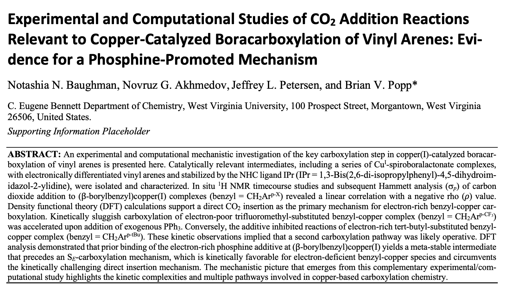@article{baughman2020experimental,
title={Experimental and Computational Analysis of CO2 Addition Reactions Relevant to Copper-Catalyzed Boracarboxylation of Vinyl Arenes: Evidence for a Phosphine-Promoted Mechanism},
author={Baughman, Notashia N and Akhmedov, Novruz G and Petersen, Jeffrey L and Popp, Brian V},
journal={Organometallics},
volume={40},
number={1},
pages={23--37},
year={2020},
publisher={ACS Publications},
doi={10.1021/acs.organomet.0c00488},
url={https://doi.org/10.1021/acs.organomet.0c00488}
}
Acceleration of Premixed Flames in Obstructed Pipes with Both Extremes Open¶
Adebiyi, A., Abidakun, O., & Akkerman, V. (2020). “Acceleration of Premixed Flames in Obstructed Pipes with Both Extremes Open.” Energies, 13(16), 4094.
Investigating the interactions of the first 17 amino acid residues of Huntingtin with lipid vesicles using mass spectrometry and molecular dynamics¶
Karanji, A. K., Beasley, M., Sharif, D., Ranjbaran, A., Legleiter, J., & Valentine, S. J. (2020). “Investigating the interactions of the first 17 amino acid residues of Huntingtin with lipid vesicles using mass spectrometry and molecular dynamics.” Journal of Mass Spectrometry, 55(1), e4470.
Kinetic study of the CN radical reaction with 2‐methylfuran¶
Lee, J., Caster, K., Maddaleno, T., Donnellan, Z., Selby, T. M., & Goulay, F. (2020). “Kinetic study of the CN radical reaction with 2‐methylfuran.” International Journal of Chemical Kinetics, 52(11), 838-851.
Phylogenomics of the genus Populus reveals extensive interspecific gene flow and balancing selection¶
Wang, M., Zhang, L., Zhang, Z., Li, M., Wang, D., Zhang, X., Xi, Z., Keefover‐Ring, K., Smart, L. B., DiFazio, S. P., Olson, M. S., Yin, T., Liu, J., & Ma, T. (2020). “Phylogenomics of the genus Populus reveals extensive interspecific gene flow and balancing selection.” New Phytologist, 225(3), 1370-1382.
Sequencing and analysis of the sex determination region of Populus trichocarpa¶
Zhou, R., Macaya-Sanz, D., Schmutz, J., Jenkins, J. W., Tuskan, G. A., & DiFazio, S. P. (2020). “Sequencing and analysis of the sex determination region of Populus trichocarpa.” Genes, 11(8), 843.
Host plant genetic control of associated fungal and insect species in a Populus hybrid cross¶
Simon, S. J., Tschaplinski, T. J., LeBoldus, J. M., Keefover‐Ring, K., Azeem, M., Chen, J., Macaya‐Sanz, D., MacDonald, W. L., Muchero, W., & DiFazio, S. P. (2020). “Host plant genetic control of associated fungal and insect species in a Populus hybrid cross.” Ecology and Evolution, 10(11), 5119-5134.
Synthesis, characterization, and application of a highly hydrophilic triarylmethyl radical for biomedical EPR¶
Sanzhaeva, U., Poncelet, M., Tseytlin, O., Tseytlin, M., Gencheva, M., Eubank, T. D., Khramtsov, V. V., & Driesschaert, B. (2020). “Synthesis, characterization, and application of a highly hydrophilic triarylmethyl radical for biomedical EPR.” The Journal of organic chemistry, 85(16), 10388-10398.
Modeling study of deep direct use geothermal on the West Virginia university campus-morgantown, WV¶
Zhang, Y., Garapati, N., Doughty, C., & Jeanne, P. (2020). “Modeling study of deep direct use geothermal on the West Virginia university campus-morgantown, WV.” Geothermics, 87101848.
A specific amino acid context in EGFR and HER2 phosphorylation sites enables selective binding to the active site of Src homology phosphatase 2 (SHP2)¶
Hartman, Z., Geldenhuys, W. J., & Agazie, Y. M. (2020). “A specific amino acid context in EGFR and HER2 phosphorylation sites enables selective binding to the active site of Src homology phosphatase 2 (SHP2).” Journal of Biological Chemistry, 295(11), 3563-3575.
Enzymatic Oxidation of Biological Thiols by MitoNEET¶
Skolik, R. A., Geldenhuys, W. J., Konkle, M. E., & Menze, M. A. (2020). “Enzymatic Oxidation of Biological Thiols by MitoNEET.” The FASEB Journal, 34(S1), 1-1.
Physics-informed machine learning with autoencoders and LSTM for probabilistic space weather modeling and forecasting¶
Licata, R. J., & Mehta, P. M. (2020). “Physics-informed machine learning with autoencoders and LSTM for probabilistic space weather modeling and forecasting.” 100th American Meteorological Society Annual Meeting, .
Modeling the uncertainties of solar system ephemerides for robust gravitational-wave searches with pulsar-timing arrays¶
Vallisneri, M., Taylor, S., Simon, J., Folkner, W., Park, R., Cutler, C., Ellis, J., Lazio, T., Vigeland, S., Aggarwal, K., Arzoumanian, Z., Baker, P., Brazier, A., Brook, P., Burke-Spolaor, S., Chatterjee, S., Cordes, J., Cornish, N., Crawford, F., Cromartie, H., Crowter, K., DeCesar, M., Demorest, P., Dolch, T., Ferdman, R., Ferrara, E., Fonseca, E., Garver-Daniels, N., Gentile, P., Good, D., Hazboun, J., Holgado, A., Huerta, E., Islo, K., Jennings, R., Jones, G., Jones, M., Kaplan, D., Kelley, L., Key, J., Lam, M., Levin, L., Lorimer, D., Luo, J., Lynch, R., Madison, D., McLaughlin, M., McWilliams, S., Mingarelli, C., Ng, C., Nice, D., Pennucci, T., Pol, N., Ransom, S., Ray, P., Siemens, X., Spiewak, R., Stairs, I., Stinebring, D., Stovall, K., Swiggum, J., Haasteren, R. v., Witt, C., & Zhu, W. (2020). “Modeling the uncertainties of solar system ephemerides for robust gravitational-wave searches with pulsar-timing arrays.” The Astrophysical Journal, 893(2), 112.
The nanograv 11 yr data set: Evolution of gravitational-wave background statistics¶
Hazboun, J., Simon, J., Taylor, S., Lam, M., Vigeland, S., Islo, K., Key, J., Arzoumanian, Z., Baker, P., Brazier, A., Brook, P., Burke-Spolaor, S., Chatterjee, S., Cordes, J., Cornish, N., Crawford, F., Crowter, K., Cromartie, H., DeCesar, M., Demorest, P., Dolch, T., Ellis, J., Ferdman, R., Ferrara, E., Fonseca, E., Garver-Daniels, N., Gentile, P., Good, D., Holgado, A., Huerta, E., Jennings, R., Jones, G., Jones, M., Kaiser, A., Kaplan, D., Kelley, L., Lazio, T., Levin, L., Lommen, A., Lorimer, D., Luo, J., Lynch, R., Madison, D., McLaughlin, M., McWilliams, S., Mingarelli, C., Ng, C., Nice, D., Pennucci, T., Pol, N., Ransom, S., Ray, P., Siemens, X., Spiewak, R., Stairs, I., Stinebring, D., Stovall, K., Swiggum, J., Turner, J., Vallisneri, M., Haasteren, R. V., Witt, C., Zhu, W., & Collaboration, N. (2020). “The nanograv 11 yr data set: Evolution of gravitational-wave background statistics.” The Astrophysical Journal, 890(2), 108.
Analyzing the grain‐boundary resistance of oxide‐ion conducting electrolytes: Poisson‐Cahn vs Poisson‐Boltzmann theories¶
Tong, X., Mebane, D. S., (2020). “Analyzing the grain‐boundary resistance of oxide‐ion conducting electrolytes: Poisson‐Cahn vs Poisson‐Boltzmann theories.” Journal of the American Ceramic Society, 103(1), 5-22.
New Data-Driven Interacting-Defect Model Describing Nanoscopic Grain Boundary Compositions in Ceramics¶
Tong, X., Bowman, W. J., Mejia-Giraldo, A., Crozier, P. A., & Mebane, D. S. (2020). “New Data-Driven Interacting-Defect Model Describing Nanoscopic Grain Boundary Compositions in Ceramics.” The Journal of Physical Chemistry C, 124(43), 23619-23625.
Using Simulation to Understand the Role of Titration on the Stability of a Peptide–Lipid Bilayer Complex¶
Burns, V., & Mertz, B. (2020). “Using Simulation to Understand the Role of Titration on the Stability of a Peptide–Lipid Bilayer Complex.” Langmuir, 36(41), 12272-12280.
A non-parametric approach for setting safety stock levels¶
Saldanha, J., Price, B., & Thomas, D. J. (2020). “A non-parametric approach for setting safety stock levels.” Available at SSRN 3624998, .
A machine learning approach for increased throughput of density functional theory substitutional alloy studies¶
Yasin, A. S., & Musho, T. D. (2020). “A machine learning approach for increased throughput of density functional theory substitutional alloy studies.” Computational Materials Science, 181109726.
Machine Learning Approach for Transforming Scattering Parameters to Complex Permittivity¶
Tempke, R., Thomas, L., Wildfire, C., Shekhawat, D., & Musho, T. (2020). “Machine Learning Approach for Transforming Scattering Parameters to Complex Permittivity.” arXiv preprint arXiv:2007.01443, .
Multimessenger gravitational-wave searches with pulsar timing arrays: application to 3C 66B using the NANOGrav 11-year data set¶
Arzoumanian, Z., Baker, P. T., Brazier, A., Brook, P. R., Burke-Spolaor, S., Bécsy, B., Charisi, M., Chatterjee, S., Cordes, J. M., Cornish, N. J., Crawford, F., Cromartie, H. T., Crowter, K., DeCesar, M. E., Demorest, P. B., Dolch, T., Elliott, R. D., Ellis, J. A., Ferdman, R. D., Ferrara, E. C., Fonseca, E., Garver-Daniels, N., Gentile, P. A., Good, D. C., Hazboun, J. S., Islo, K., Jennings, R. J., Jones, M. L., Kaiser, A. R., Kaplan, D. L., Kelley, L. Z., Key, J. S., Lam, M. T., (2020). “Multimessenger gravitational-wave searches with pulsar timing arrays: application to 3C 66B using the NANOGrav 11-year data set.” The Astrophysical Journal, 900(2), 102.
Systematic identification of long intergenic non-coding RNAs expressed in bovine oocytes¶
Wang, J., Koganti, P. P., & Yao, J. (2020). “Systematic identification of long intergenic non-coding RNAs expressed in bovine oocytes.” Reproductive Biology and Endocrinology, 18(1), 1-9.
Numerical relativity in spherical coordinates: A new dynamical spacetime and general relativistic MHD evolution framework for the Einstein Toolkit¶
Mewes, V., Zlochower, Y., Campanelli, M., Baumgarte, T. W., Etienne, Z. B., (2020). “Numerical relativity in spherical coordinates: A new dynamical spacetime and general relativistic MHD evolution framework for the Einstein Toolkit.” Physical Review D, 101(10), 104007.
Active optical table tilt stabilization¶
Lewandowski, C. W., Knowles, T. D., Etienne, Z. B., & D’Urso, B. (2020). “Active optical table tilt stabilization.” Review of Scientific Instruments, 91(7), 076102.
SphericalNR: a dynamical spacetime and general relativistic MHD evolution framework in spherical coordinates for the Einstein toolkit¶
Mewes, V., Zlochower, Y., Campanelli, M., Baumgarte, T. W., Etienne, Z. B., (2020). “SphericalNR: a dynamical spacetime and general relativistic MHD evolution framework in spherical coordinates for the Einstein toolkit.” Phys. Rev. D, 101104007.
Twenty-first century streamflow and climate change in forest catchments of the central appalachian mountains region, US¶
Gaertner, B., Fernandez, R., & Zegre, N. (2020). “Twenty-first century streamflow and climate change in forest catchments of the central appalachian mountains region, US.” Water, 12(2), 453.
2019¶
Analysis of nonequidiffusive premixed flames in obstructed channels¶
Adebiyi, A., Abidakun, O., Idowu, G., Valiev, D., & Akkerman, V. (2019). “Analysis of nonequidiffusive premixed flames in obstructed channels.” Physical Review Fluids, 4(6), 063201.
Effect of surface friction on ultrafast flame acceleration in obstructed cylindrical pipes¶
Adebiyi, A., Alkandari, R., Valiev, D., & Akkerman, V. (2019). “Effect of surface friction on ultrafast flame acceleration in obstructed cylindrical pipes.” AIP Advances, 9(3), 035249.
Kinetic Investigations of the CH (X2Π) Radical Reaction with Cyclopentadiene¶
Caster, K. L., Donnellan, Z. N., Selby, T. M., & Goulay, F. (2019). “Kinetic Investigations of the CH (X2Π) Radical Reaction with Cyclopentadiene.” The Journal of Physical Chemistry A, 123(27), 5692-5703.
Joint linkage and association mapping of complex traits in shrub willow (Salix purpurea L.)¶
Carlson, C. H., Gouker, F. E., Crowell, C. R., Evans, L., DiFazio, S. P., Smart, C. D., & Smart, L. B. (2019). “Joint linkage and association mapping of complex traits in shrub willow (Salix purpurea L.).” Annals of Botany, 124(4), 701-715.
Genetic diversity and population structure of native, naturalized, and cultivated Salix purpurea¶
Gouker, F. E., DiFazio, S. P., Bubner, B., Zander, M., & Smart, L. B. (2019). “Genetic diversity and population structure of native, naturalized, and cultivated Salix purpurea.” Tree Genetics & Genomes, 15(3), 1-14.
Quantification of windage and vibrational losses in flexure springs of a one kW two-stroke free piston linear engine alternator¶
Meymian, N. Z., Clark, N., Subramanian, J., Heiskell, G., Johnson, D., Mahmudzadeh, F., Darzi, M., Musho, T., & Famouri, P. (2019). “Quantification of windage and vibrational losses in flexure springs of a one kW two-stroke free piston linear engine alternator.” Cryogenics, (2019-01-0816), .
Feasibility of development of geothermal deep direct-use district heating and cooling system at west Virginia university campus-Morgantown, WV¶
Garapati, N., Alonge, O. B., Hall, L., Irr, V. J., Zhang, Y., Smith, J. D., Jeanne, P., & Doughty, C. (2019). “Feasibility of development of geothermal deep direct-use district heating and cooling system at west Virginia university campus-Morgantown, WV.” Energy & Fuels, (DOE-WVU-SGW), .
Crystal structure of the mitochondrial protein mitoNEET bound to a benze-sulfonide ligand¶
Geldenhuys, W. J., Long, T. E., Saralkar, P., Iwasaki, T., Nuñez, R. A., Nair, R. R., Konkle, M. E., Menze, M. A., Pinti, M. V., Hollander, J. M., Hazlehurst, L. A., & Robart, A. R. (2019). “Crystal structure of the mitochondrial protein mitoNEET bound to a benze-sulfonide ligand.” Communications chemistry, 2(1), 1-9.
Effect of surface–bulk partitioning on the heterogeneous oxidation of aqueous saccharide aerosols¶
Fan, H., Masaya, T. W., & Goulay, F. (2019). “Effect of surface–bulk partitioning on the heterogeneous oxidation of aqueous saccharide aerosols.” Physical Chemistry Chemical Physics, 21(6), 2992-3001.
Product detection of the CH radical reactions with ammonia and methyl-substituted amines¶
Bourgalais, J., Caster, K. L., Durif, O., Osborn, D. L., (2019). “Product detection of the CH radical reactions with ammonia and methyl-substituted amines.” The Journal of Physical Chemistry A, 123(11), 2178-2193.
Physics-informed machine learning for probabilistic space weather modeling and forecasting: Thermosphere and satellite drag¶
Licata, R., & Mehta, P. M. (2019). “Physics-informed machine learning for probabilistic space weather modeling and forecasting: Thermosphere and satellite drag.” AGU Fall Meeting Abstracts, 2019SM31E-3198.
The NANOGrav 11 yr data set: limits on gravitational waves from individual supermassive black hole binaries¶
Aggarwal, K., Arzoumanian, Z., Baker, P., Brazier, A., Brinson, M., Brook, P., Burke-Spolaor, S., Chatterjee, S., Cordes, J., Cornish, N., Crawford, F., Crowter, K., Cromartie, H., DeCesar, M., Demorest, P., Dolch, T., Ellis, J., Ferdman, R., Ferrara, E., Fonseca, E., Garver-Daniels, N., Gentile, P., Hazboun, J., Holgado, A., Huerta, E., Islo, K., Jennings, R., Jones, G., Jones, M., Kaiser, A., Kaplan, D., Kelley, L., Key, J., Lam, M., Lazio, T., Levin, L., Lorimer, D., Luo, J., Lynch, R., Madison, D., McLaughlin, M., McWilliams, S., Mingarelli, C., Ng, C., Nice, D., Pennucci, T., Pol, N., Ransom, S., Ray, P., Siemens, X., Simon, J., Spiewak, R., Stairs, I., Stinebring, D., Stovall, K., Swiggum, J., Taylor, S., Turner, J., Vallisneri, M., Haasteren, R. v., Vigeland, S., Witt, C., Zhu, W., & Collaboration, N. (2019). “The NANOGrav 11 yr data set: limits on gravitational waves from individual supermassive black hole binaries.” The Astrophysical Journal, 880(2), 116.
Induced spins from scattering experiments of initially nonspinning black holes¶
Nelson, P. E., Etienne, Z. B., McWilliams, S. T., & Nguyen, V. (2019). “Induced spins from scattering experiments of initially nonspinning black holes.” Physical Review D, 100(12), 124045.
Probabilistic Model Building with Uncertainty Quantification and Propagation for a Dynamic Fixed Bed CO2 Capture Process¶
Ostace, A., Kocan, K. X., Mebane, D. S., Schmal, J. P., & Bhattacharyya, D. (2019). “Probabilistic Model Building with Uncertainty Quantification and Propagation for a Dynamic Fixed Bed CO2 Capture Process.” Energy & Fuels, 34(2), 2516-2532.
Ions Modulate Key Interactions between pHLIP and Lipid Membranes¶
Westerfield, J., Gupta, C., Scott, H., Ye, Y., Cameron, A., Mertz, B., & Barrera, F. N. (2019). “Ions Modulate Key Interactions between pHLIP and Lipid Membranes.” Biophysical Journal, 117(5), 920-929.
Theoretical Insights into the Mechanism of Wavelength Regulation in Blue-Absorbing Proteorhodopsin¶
Lee, C., Sekharan, S., & Mertz, B. (2019). “Theoretical Insights into the Mechanism of Wavelength Regulation in Blue-Absorbing Proteorhodopsin.” The Journal of Physical Chemistry B, 123(50), 10631-10641.
Metal–organic framework coated titanium dioxide nanorod array p–n heterojunction photoanode for solar water-splitting¶
Yang, H., Bright, J., Kasani, S., Zheng, P., Musho, T., Chen, B., Huang, L., & Wu, N. (2019). “Metal–organic framework coated titanium dioxide nanorod array p–n heterojunction photoanode for solar water-splitting.” Nano Research, 12(3), 643-650.
Density functional theory evaluation of cation-doped bismuth molybdenum oxide photocatalysts for nitrogen fixation¶
Yasin, A. S., Liu, B., Wu, N., & Musho, T. (2019). “Density functional theory evaluation of cation-doped bismuth molybdenum oxide photocatalysts for nitrogen fixation.” Computational Materials Science, 15865-75.
Microwave Catalytic Reactor for Converting Light Alkane to Aromatics¶
Bai, X., Robinson, B., Musho, T., Killmer, C., Wang, Y., & Hu, J. (2019). “Microwave Catalytic Reactor for Converting Light Alkane to Aromatics.” 2019 AIChE Annual Meeting, .
Promotion and mitigation of premixed flame propagation in a gaseous-dusty environment with various dust distributions¶
Demir, S., Sezer, H., Bush, T., & Akkerman, V. (2019). “Promotion and mitigation of premixed flame propagation in a gaseous-dusty environment with various dust distributions.” Fire Safety Journal, 105270-276.
The event horizon general relativistic magnetohydrodynamic code comparison project¶
Porth, O., Chatterjee, K., Narayan, R., Gammie, C. F., Mizuno, Y., Anninos, P., Baker, J. G., Bugli, M., Chan, C., Davelaar, J., Zanna, L. D., Etienne, Z. B., Fragile, P. C., Kelly, B. J., Liska, M., Markoff, S., McKinney, J. C., Mishra, B., Noble, S. C., Olivares, H., Prather, B., Rezzolla, L., Ryan, B. R., Stone, J. M., Tomei, N., White, C. J., Younsi, Z., Akiyama, K., Alberdi, A., Alef, W., Asada, K., Azulay, R., Baczko, A., Ball, D., Baloković, M., Barrett, J., Bintley, D., Blackburn, L., Boland, W., Bouman, K. L., Bower, G. C., Bremer, M., Brinkerink, C. D., Brissenden, R., Britzen, S., Broderick, A. E., Broguiere, D., Bronzwaer, T., Byun, D., Carlstrom, J. E., Chael, A., Chatterjee, S., Chen, M., Chen, Y., Cho, I., Christian, P., Conway, J. E., Cordes, J. M., Geoffrey, B., Cui, Y., Laurentis, M. D., Deane, R., Dempsey, J., Desvignes, G., Doeleman, S. S., Eatough, R. P., Falcke, H., Fish, V. L., Fomalont, E., Fraga-Encinas, R., Freeman, B., Friberg, P., Fromm, C. M., Gomez, J. L., Galison, P., Garcia, R., Gentaz, O., Georgiev, B., Goddi, C., Gold, R., Gu, M., Gurwell, M., Hada, K., Hecht, M. H., Hesper, R., Ho, L. C., Ho, P., Honma, M., Huang, C. L., Huang, L., Hughes, D. H., Ikeda, S., Inoue, M., Issaoun, S., James, D. J., Jannuzi, B. T., Janssen, M., Jeter, B., Jiang, W., Johnson, M. D., Jorstad, S., Jung, T., Karami, M., Karuppusamy, R., Kawashima, T., Keating, G. K., Kettenis, M., Kim, J., Kim, J., Kim, J., Kino, M., Koay, J. Y., Patrick, M. K., Koyama, S., Kramer, M., Kramer, C., Krichbaum, T. P., Kuo, C., Lauer, T. R., Lee, S., Li, Y., Li, Z., Lindqvist, M., Liu, K., Liuzzo, E., Lo, W., Lobanov, A. P., Loinard, L., Lonsdale, C., Lu, R., MacDonald, N. R., Mao, J., Marrone, D. P., Marscher, A. P., Marti-Vidal, I., Matsushita, S., Matthews, L. D., Medeiros, L., Menten, K. M., Mizuno, I., Moran, J. M., Moriyama, K., Moscibrodzka, M., Mueller, C., Nagai, H., Nagar, N. M., Nakamura, M., Narayanan, G., Natarajan, I., & Neri, R. (2019). “The event horizon general relativistic magnetohydrodynamic code comparison project.” The Astrophysical Journal Supplement Series, 243(2), 26.
Numerical generation of vector potentials from specified magnetic fields¶
Silberman, Z. J., Adams, T. R., Faber, J. A., Etienne, Z. B., & Ruchlin, I. (2019). “Numerical generation of vector potentials from specified magnetic fields.” Journal of Computational Physics, 379421-437.
Natural forests exhibit higher carbon sequestration and lower water consumption than planted forests in China¶
Yu, Z., Liu, S., Wang, J., Wei, X., Schuler, J., Sun, P., Harper, R., & Zegre, N. (2019). “Natural forests exhibit higher carbon sequestration and lower water consumption than planted forests in China.” Global change biology, 25(1), 68-77.
Assessing streamflow sensitivity of forested headwater catchments to disturbance and climate change in the central Appalachian Mountains region, USA¶
Young, D., Zegre, N., Edwards, P., & Fernandez, R. (2019). “Assessing streamflow sensitivity of forested headwater catchments to disturbance and climate change in the central Appalachian Mountains region, USA.” Science of the Total Environment, 694133382.
The importance of field-based drought experiments in the setting of a pluvial: transpiration dynamics of two dominant broad-leaved tree species in West Virginia¶
Guillen, L. A., Zegre, N., McNeil, B. E., & Brzostek, E. R. (2019). “The importance of field-based drought experiments in the setting of a pluvial: transpiration dynamics of two dominant broad-leaved tree species in West Virginia.” AGU Fall Meeting 2019, .
2018¶
Electrical percolation threshold of magnetostrictive inclusions in a piezoelectric matrix composite as a function of relative particle size¶
Barbero, E. J., & Bedard, A. J. (2018). “Electrical percolation threshold of magnetostrictive inclusions in a piezoelectric matrix composite as a function of relative particle size.” Computational Particle Mechanics, 5(2), 227-238.
Hardwood tree genomics: unlocking woody plant biology¶
Tuskan, G. A., Groover, A. T., Schmutz, J., DiFazio, S. P., Myburg, A., Grattapaglia, D., Smart, L. B., Yin, T., Aury, J., Kremer, A., Leroy, T., Provost, G. L., Plomion, C., Carlson, J. E., Randall, J., Westbrook, J., Grimwood, J., Muchero, W., Jacobson, D., & Michener, J. K. (2018). “Hardwood tree genomics: unlocking woody plant biology.” Frontiers in plant science, 1799.
An optimization method for flexural bearing design for high-stroke high-frequency applications¶
Meymian, N. Z., Clark, N. N., Musho, T., Darzi, M., Johnson, D., & Famouri, P. (2018). “An optimization method for flexural bearing design for high-stroke high-frequency applications.” Cryogenics, 9582-94.
Novel Technological Approach To Enhance Methane Recovery from Class 2 Hydrate Deposits by Employing CO2 Injection¶
Sridhara, P., Anderson, B. J., Garapati, N., Seol, Y., & Myshakin, E. M. (2018). “Novel Technological Approach To Enhance Methane Recovery from Class 2 Hydrate Deposits by Employing CO2 Injection.” Energy & Fuels, 32(3), 2949-2961.
Exosomes derived from B16F0 melanoma cells alter the transcriptome of cytotoxic T cells that impacts mitochondrial respiration¶
Bland, C. L., Byrne‐Hoffman, C. N., Fernandez, A., Rellick, S. L., Deng, W., & Klinke, D. J. (2018). “Exosomes derived from B16F0 melanoma cells alter the transcriptome of cytotoxic T cells that impacts mitochondrial respiration.” The FEBS journal, 285(6), 1033-1050.
Characterization of a large sex determination region in Salix purpurea L. (Salicaceae)¶
Zhou, R., Macaya-Sanz, D., Rodgers-Melnick, E., Carlson, C. H., Gouker, F. E., Evans, L. M., Schmutz, J., Jenkins, J. W., Yan, J., Tuskan, G. A., Smart, L. B., & DiFazio, S. P. (2018). “Characterization of a large sex determination region in Salix purpurea L. (Salicaceae).” Molecular Genetics and Genomics, 293(6), 1437-1452.
The NANOGrav 11 year data set: pulsar-timing constraints on the stochastic gravitational-wave background¶
Arzoumanian, Z., Baker, P., Brazier, A., Burke-Spolaor, S., Chamberlin, S., Chatterjee, S., Christy, B., Cordes, J. M., Cornish, N. J., Crawford, F., Cromartie, H. T., Crowter, K., DeCesar, M., Demorest, P. B., Dolch, T., Ellis, J. A., Ferdman, R. D., Ferrara, E., Folkner, W., Fonseca, E., Garver-Daniels, N., Gentile, P. A., Haas, R., Hazboun, J., Huerta, E., Islo, K., Jones, G., Jones, M. L., Kaplan, D. L., Kaspi, V. M., Lam, M. T., (2018). “The NANOGrav 11 year data set: pulsar-timing constraints on the stochastic gravitational-wave background.” The Astrophysical Journal, 859(1), 47.
Cooperative Non-bonded Forces Control Membrane Binding of the pH-Low Insertion Peptide pHLIP¶
Gupta, C., Ren, Y., & Mertz, B. (2018). “Cooperative Non-bonded Forces Control Membrane Binding of the pH-Low Insertion Peptide pHLIP.” Biophysical Journal, 115(12), 2403-2412.
Allosteric effects of the proton donor on the microbial proton pump proteorhodopsin¶
Faramarzi, S., Feng, J., & Mertz, B. (2018). “Allosteric effects of the proton donor on the microbial proton pump proteorhodopsin.” Biophysical journal, 115(7), 1240-1250.
Functionalization of a metal-organic framework semiconductor for tuned band structure and catalytic activity¶
Li, J., Musho, T., Bright, J., & Wu, N. (2018). “Functionalization of a metal-organic framework semiconductor for tuned band structure and catalytic activity.” Journal of The Electrochemical Society, 166(5), H3029.
Ab-initio Study of the Electron Mobility in a Functionalized UiO-66 Metal Organic Framework¶
Musho, T. D., & Yasin, A. S. (2018). “Ab-initio Study of the Electron Mobility in a Functionalized UiO-66 Metal Organic Framework.” Journal of Electronic Materials, 47(7), 3692-3700.
Dielectric measurement of powdery materials using a coaxial transmission line¶
Tempke, R., Wildfire, C., Shekhawat, D., & Musho, T. (2018). “Dielectric measurement of powdery materials using a coaxial transmission line.” arXiv preprint arXiv:1810.11472, .
Elastic, mechanical, and thermodynamic properties of Bi-Sb binaries: Effect of spin-orbit coupling¶
Singh, S., Valencia-Jaime, I., Pavlic, O., & Romero, A. H. (2018). “Elastic, mechanical, and thermodynamic properties of Bi-Sb binaries: Effect of spin-orbit coupling.” Physical Review B, 97(5), 054108.
The NANOGrav 11-year data set: high-precision timing of 45 millisecond pulsars¶
Arzoumanian, Z., Brazier, A., Burke-Spolaor, S., Chamberlin, S., Chatterjee, S., Christy, B., Cordes, J. M., Cornish, N. J., Crawford, F., Cromartie, H. T., Crowter, K., DeCesar, M. E., Demorest, P. B., Dolch, T., Ellis, J. A., Ferdman, R. D., Ferrara, E. C., Fonseca, E., Garver-Daniels, N., Gentile, P. A., Halmrast, D., Huerta, E., Jenet, F. A., Jessup, C., Jones, G., Jones, M. L., Kaplan, D. L., Lam, M. T., (2018). “The NANOGrav 11-year data set: high-precision timing of 45 millisecond pulsars.” The Astrophysical Journal Supplement Series, 235(2), 37.
Numerical relativity in spherical coordinates with the Einstein Toolkit¶
Mewes, V., Zlochower, Y., Campanelli, M., Ruchlin, I., Etienne, Z. B., & Baumgarte, T. W. (2018). “Numerical relativity in spherical coordinates with the Einstein Toolkit.” Physical Review D, 97(8), 084059.
SENR/NRPy+: Numerical Relativity in Singular Curvilinear Coordinate Systems¶
Etienne, Z., Ruchlin, I., & Baumgarte, T. (2018). “SENR/NRPy+: Numerical Relativity in Singular Curvilinear Coordinate Systems.” APS April Meeting Abstracts, 2018S13. 004.
Evaluating the Stability of Headwater Reference Catchments from Long-Term Paired Watershed Studies: an Eastern Perspective¶
Guillen, L. A., Zegre, N., & Fernandez, R. (2018). “Evaluating the Stability of Headwater Reference Catchments from Long-Term Paired Watershed Studies: an Eastern Perspective.” AGU Fall Meeting Abstracts, 2018H33L-2236.
2017¶
A space‐charge treatment of the increased concentration of reactive species at the surface of a ceria solid solution¶
Zurhelle, A. F., Tong, X., Klein, A., Mebane, D. S., (2017). “A space‐charge treatment of the increased concentration of reactive species at the surface of a ceria solid solution.” Angewandte Chemie, 129(46), 14708-14712.
Multi-scale modeling of an amine sorbent fluidized bed adsorber with dynamic discrepancy reduced modeling¶
Li, K., Mahapatra, P., Bhat, K. S., Miller, D. C., & Mebane, D. S. (2017). “Multi-scale modeling of an amine sorbent fluidized bed adsorber with dynamic discrepancy reduced modeling.” Reaction Chemistry & Engineering, 2(4), 550-560.
Molecular dynamics simulations as a tool for accurate determination of surfactant micelle properties¶
Faramarzi, S., Bonnett, B., Scaggs, C. A., Hoffmaster, A., Grodi, D., Harvey, E., & Mertz, B. (2017). “Molecular dynamics simulations as a tool for accurate determination of surfactant micelle properties.” Langmuir, 33(38), 9934-9943.
Structural Insights into Selective Ligand–Receptor Interactions Leading to Receptor Inactivation Utilizing Selective Melanocortin 3 Receptor Antagonists¶
Cai, M., Marelli, U. K., Mertz, B., Beck, J. G., Opperer, F., Rechenmacher, F., Kessler, H., & Hruby, V. J. (2017). “Structural Insights into Selective Ligand–Receptor Interactions Leading to Receptor Inactivation Utilizing Selective Melanocortin 3 Receptor Antagonists.” Biochemistry, 56(32), 4201-4209.
A Novel Approach to Battlefield Wound Assessment and Treatment for Forward Surgical Teams¶
Prince, J., (2017). “A Novel Approach to Battlefield Wound Assessment and Treatment for Forward Surgical Teams.” HDIAC Journal, 440-45.
Predicting the Spin Seebeck Voltage in Spin-polarized Materials: A Quantum Mechanical Transport Model Approach¶
Koneru, A., & Musho, T. D. (2017). “Predicting the Spin Seebeck Voltage in Spin-polarized Materials: A Quantum Mechanical Transport Model Approach.” arXiv preprint arXiv:1712.04074, .
Transformation of a Metal-organic Framework for Tuned Catalytic Activity¶
Li, J., Musho, T., Bright, J., & Wu, N. (2017). “Transformation of a Metal-organic Framework for Tuned Catalytic Activity.” arXiv preprint arXiv:1704.06863, .
Prompt electromagnetic transients from binary black hole mergers¶
Kelly, B. J., Baker, J. G., Etienne, Z. B., Giacomazzo, B., & Schnittman, J. (2017). “Prompt electromagnetic transients from binary black hole mergers.” Physical Review D, 96(12), 123003.
Distinguishing transients from merger characteristics in EM signals from black hole binary mergers¶
Kelly, B., Etienne, Z., Giacomazzo, B., Baker, J., & Schnittman, J. (2017). “Distinguishing transients from merger characteristics in EM signals from black hole binary mergers.” APS April Meeting Abstracts, 2017R3. 005.
Assessment of 21st century change of climate drivers to hydrological change across the Appalachian Region¶
Fernandez, R., & Zegre, N. (2017). “Assessment of 21st century change of climate drivers to hydrological change across the Appalachian Region.” AGU Fall Meeting Abstracts, 2017GC31F-02.
2016¶
Reactions of atomic carbon with butene isomers: Implications for molecular growth in carbon-rich environments¶
Bourgalais, J., Spencer, M., Osborn, D. L., Goulay, F., & Picard, S. L. (2016). “Reactions of atomic carbon with butene isomers: Implications for molecular growth in carbon-rich environments.” The Journal of Physical Chemistry A, 120(46), 9138-9150.
The Mechanism of CO2 Adsorption under Dry and Humid Conditions in Mesoporous Silica-Supported Amine Sorbents¶
Li, K., Kress, J. D., & Mebane, D. S. (2016). “The Mechanism of CO2 Adsorption under Dry and Humid Conditions in Mesoporous Silica-Supported Amine Sorbents.” The Journal of Physical Chemistry C, 120(41), 23683-23691.
Theoretical evidence for multiple charge transfer pathways in Bacteriorhodopsin¶
Lee, C., & Mertz, B. (2016). “Theoretical evidence for multiple charge transfer pathways in Bacteriorhodopsin.” Journal of Chemical Theory and Computation, 12(4), 1639-1646.
Study of the inorganic substitution in a functionalized UiO-66 metal–organic framework¶
Yasin, A. S., Li, J., Wu, N., & Musho, T. (2016). “Study of the inorganic substitution in a functionalized UiO-66 metal–organic framework.” Physical Chemistry Chemical Physics, 18(18), 12748-12754.
Thermodynamics of the oxygen evolution electrocatalysis in a functionalized UiO‐66 metal‐organic frameworks¶
Musho, T., Li, J., & Wu, N. (2016). “Thermodynamics of the oxygen evolution electrocatalysis in a functionalized UiO‐66 metal‐organic frameworks.” International Journal of Quantum Chemistry, 116(15), 1153-1159.
Prediction and control of spin polarization in a Weyl semimetallic phase of BiSb¶
Singh, S., Garcia-Castro, A., Valencia-Jaime, I., Munoz, F., & Romero, A. H. (2016). “Prediction and control of spin polarization in a Weyl semimetallic phase of BiSb.” Physical Review B, 94(16), 161116.
2015¶
Acceleration of Non-Equidiffusive Flames in Channels: Computational Simulations and Analytical Studies¶
Bilgili, S. A.(2015). “Acceleration of Non-Equidiffusive Flames in Channels: Computational Simulations and Analytical Studies.” Journal of Mass Spectrometry.
Phylogenetic reconstruction using four low-copy nuclear loci strongly supports a polyphyletic origin of the genus Sorghum¶
Hawkins, J. S., Ramachandran, D., Henderson, A., Freeman, J., Carlise, M., Harris, A., & Willison-Headley, Z. (2015). “Phylogenetic reconstruction using four low-copy nuclear loci strongly supports a polyphyletic origin of the genus Sorghum.” Annals of Botany, 116(2), 291-299.
Huntingtin N-terminal monomeric and multimeric structures destabilized by covalent modification of heteroatomic residues¶
Arndt, J. R., Kondalaji, S. G., Maurer, M. M., Parker, A., Legleiter, J., & Valentine, S. J. (2015). “Huntingtin N-terminal monomeric and multimeric structures destabilized by covalent modification of heteroatomic residues.” Biochemistry, 54(28), 4285-4296.
A Bayesian approach to electrical conductivity relaxation and isotope exchange/secondary ion mass spectrometry¶
Blair, J., & Mebane, D. S. (2015). “A Bayesian approach to electrical conductivity relaxation and isotope exchange/secondary ion mass spectrometry.” Solid State Ionics, 27047-53.
Retinal flip in rhodopsin activation?¶
Feng, J., Brown, M. F., & Mertz, B. (2015). “Retinal flip in rhodopsin activation?.” Biophysical journal, 108(12), 2767-2770.
Explaining the mobility of retinal in activated rhodopsin and opsin¶
Mertz, B., Feng, J., Corcoran, C., & Neeley, B. (2015). “Explaining the mobility of retinal in activated rhodopsin and opsin.” Photochemical & Photobiological Sciences, 14(11), 1952-1964.
Ab initio calculation of electronic charge mobility in metal–organic frameworks¶
Musho, T., & Wu, N. (2015). “Ab initio calculation of electronic charge mobility in metal–organic frameworks.” Physical Chemistry Chemical Physics, 17(39), 26160-26165.
Predicting the figure of merit of nanostructured thermoelectric materials¶
Musho, T.(2015). “Predicting the figure of merit of nanostructured thermoelectric materials.” Journal of Materials Research, 30(17), 2628-2637.
Thermodynamics of the Oxygen Evolution Electrocatalysis in Metal-Organic Frameworks¶
Musho, T., Li, J., & Wu, N. (2015). “Thermodynamics of the Oxygen Evolution Electrocatalysis in Metal-Organic Frameworks.” arXiv preprint arXiv:1510.04851, .
IllinoisGRMHD: an open-source, user-friendly GRMHD code for dynamical spacetimes¶
Etienne, Z. B., Paschalidis, V., Haas, R., Mösta, P., & Shapiro, S. L. (2015). “IllinoisGRMHD: an open-source, user-friendly GRMHD code for dynamical spacetimes.” Classical and Quantum Gravity, 32(17), 175009.
2014¶
Variation in allelic expression associated with a recombination hotspot in Zea mays¶
Hawkins, J. S., Delgado, V., Feng, L., Carlise, M., Dooner, H. K., & Bennetzen, J. L. (2014). “Variation in allelic expression associated with a recombination hotspot in Zea mays.” The Plant Journal, 79(3), 375-384.
Band gap modulation of functionalized metal-organic frameworks¶
Musho, T. D., Li, J., & Wu, N. (2014). “Band gap modulation of functionalized metal-organic frameworks.” Phys Chem Chem Phys, 16(43), 23646-53.
Predicting the Influence of Secondary Phases on the Thermoelectric Performance in Cobalt Containing Spinels (ACo2O4; A={Co,Ni,Zn})¶
Musho, T., Koneru, A., & Mebane, D. (2014). “Predicting the Influence of Secondary Phases on the Thermoelectric Performance in Cobalt Containing Spinels (ACo2O4; A={Co,Ni,Zn}).” APS March Meeting Abstracts, 2014Y25. 006.
2013¶
Reservoir simulation for production of CH4 from gas hydrate reservoirs using CO2/CO2+ N2 by HydrateResSim¶
Garapati, N.(2013). “Reservoir simulation for production of CH4 from gas hydrate reservoirs using CO2/CO2+ N2 by HydrateResSim.” Cryogenics, .
Reservoir Modelling and Numerical Analysis of the Iġnik Sikumi Gas Hydrate Field Trial¶
Anderson, B., Garapati, N., & McGuire, P. (2013). “Reservoir Modelling and Numerical Analysis of the Iġnik Sikumi Gas Hydrate Field Trial.” Materials Advances, cp-349-00004.
Transport, Zwitterions, and the Role of Water for CO2 Adsorption in Mesoporous Silica-Supported Amine Sorbents¶
Mebane, D. S., Kress, J. D., Storlie, C. B., Fauth, D. J., Gray, M. L., & Li, K. (2013). “Transport, Zwitterions, and the Role of Water for CO2 Adsorption in Mesoporous Silica-Supported Amine Sorbents.” The Journal of Physical Chemistry C, 117(50), 26617-26627.